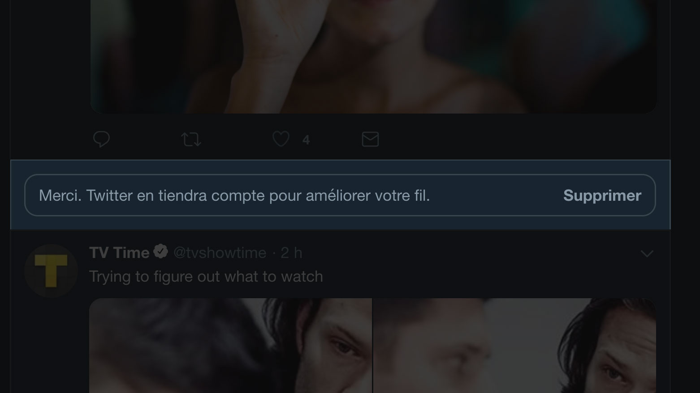

Analyser et améliorer l'expérience utilisateur d'une fonctionnalité.
Rethinking UX est un workshop qui a comme objectif d'observer des fonctionnalités d'un service,
d'en identifier les problèmes et de proposer ainsi qu'argumenter une proposition d'amélioration.
Notre choix
Cette année, pour le workshop Rethinking UX, nous avons eu le choix entre cinq services.
Medium
Pinterest
UberEats
WhatsApp
Twitter
Après beaucoup de réflexion et d’hésitation quant au choix du service sur lequel nous allions
travailler, notre choix s'est porté sur Twitter. Ce qui était intéressant, c'était que la moitié du
groupe n'utilisait pas du tout ce service, ce qui allais nous permettre d'avoir une analyse plus
intéressante.
Pour nous, il s'agit d'un réseau social permettant de s'informer, communiquer, partager et
promouvoir rapidement des idées entre utilisateurs au moyen de messages dit Tweet, composé de 280
caractères.
Fonctionnalités
Inscription
Connexion
Déconnexion
Tweet
Message
Abonnement
Éditer profil
Liste
Moments
Paramètres
Retour haut
Tendances
Mode nuit
Recherche
Notre utilisation
Nous avons listé la manière dont chacun d’entre nous utilisait Twitter afin de voir quelles sont
les fonctionnalités les plus importantes et donc probablement les plus utilisées.
Suivre des personnes dans des domaines qui nous intéressent;
inspiration (art, design et web);
partage et mise en avant de proposition de jobs (freelance);
promotion et visibilité;
contacter des marques (dm);
développement d'une communauté.
Démarche
J’ai choisi de travailler sur une des fonctionnalités principales de Twitter, l’abonnement. Elle
permet de suivre un autre utilisateur sur la plate-forme et d'être notifié lorsqu'il tweet ou
retweet quelque chose. Cette fonctionnalité est simple et pourtant, elle pourrait avoir une
meilleur expérience.
Le problème
Lorsqu'on suit une personne sur Twitter c'est bien entendu car son contenu nous intéresse. Le
problème la dedans c'est qu'on s'abonne rarement à une personne pour tout son contenu, il est
fréquent qu'une partie des ses tweets ne nous intéresse pas et pour peu que la partie qui ne
nous
intéresse pas est la plus favorisé, souvent on se désabonne.
C’est un problème que je rencontre personnelement et après en avoir discuté avec d'autres
personnes, je me suis rendu compte que c'était vraiment un problème régulier chez les
utilisateurs
de Twitter.
Il est possible d'indiquer lorsqu'un tweet ne nous intéresse pas, de cette manière, Twitter va
en
prendre compte et sur base des tweets indiqués comme telle, l’algorythme va essayer d'améliorer
notre fil en éliminant ce type de contenu.
Exemple de tweet que l'on ne souhaite plus voir.
Menu présent en haut à gauche d'un tweet.
Bouton qui sert à indiquer lorsqu'un tweet ne nous intéresse pas.

Message de confirmation une fois l'action effectuée.
Tweet
Tweet arrow
Tweet menu
Tweet feed
User Testing
Le scénario de ce test est de rechercher une compte et de s’y abonner. Ensuite, se rendre sur
le
fil d’actualité et indiquer un tweet qui ne nous intéresse pas.
Le test m’a permis de me rendre compte que le processus était vraiment fastidieux et si il faut
faire ça pour chaque tweet indésirable, c’est vraiment long. En plus, une fois la page
rafraichi le
tweet précedement indiqué est de nouveau proposer et le fil n’est d’aucune manière amélioré.
C'est durant cette phase du projet que j'ai cherché à trouver une bonne solution, qui permettrait
de vraiment avoir du contenu qui nous intéresse. Pour ce faire, j'ai d'abord analysé quelques
service qui ressemblait à Twitter et qui proposait des fonctionnalités similaires.
Comparatif
Pinterest
Avantages
Follow des thématiques précises;
suggestion du contenu.
Inconvénients
Difficile de gérer ses abonnements.
Instagram
Avantages
Follow des hashtags;
abonnements facilement gérablent.
Inconvénients
Hashtags utilisés pas toujours en rapport avec l'image.
LinkedIn
Avantages
Follow des hashtags.
Inconvénients
Hashtags peu utilisé;
hashtags pas mit en avant;
hashtags suivient automatiquement, sans notra accord;
Item 1
item 2
item 3
De manière général, chaque service propose une façon de générer plus précisément ses abonnements et
donc d’avoir un contenu plus ou moins adaptés à nos intérêts.
Ma première piste était de pouvoir s'abonner à des hashtags mais ce n'est peut-être pas la meilleur
solution, ça ne résout pas vraiment le problème et une application comme TweeDeck ou TweetBot
permettant déjà de le faire.
J'ai donc penser à modifier légèrement le processus d'abonnement, au moment de s'abonner, il est
possible de voir tout les types de contenu que propose l'utilisateur et de pouvoir s'abonner ou non
à ceux-ci.
Prototype
Après avoir trouver le problème à régler, il me fallait trouver un moyen de bien la réaliser et de
proposer une solution intuitive. Les retours suite au différentes test du prototype m'ont permis de
bien peaufiner l'expérience et de proposer la version la plus optimal possible.
L’objectif du prototype est de se rendre sur le profil d’un autre utilisateur via la recherche, de
s’abonner à deux de ses sous abonnements. Ensuite, retourner sur la page d’accueil et s’abonner à
une autre personne depuis la page d’accueil. Pour finir, retourner sur le profil de la première
étape et modifier les sous abonnements.